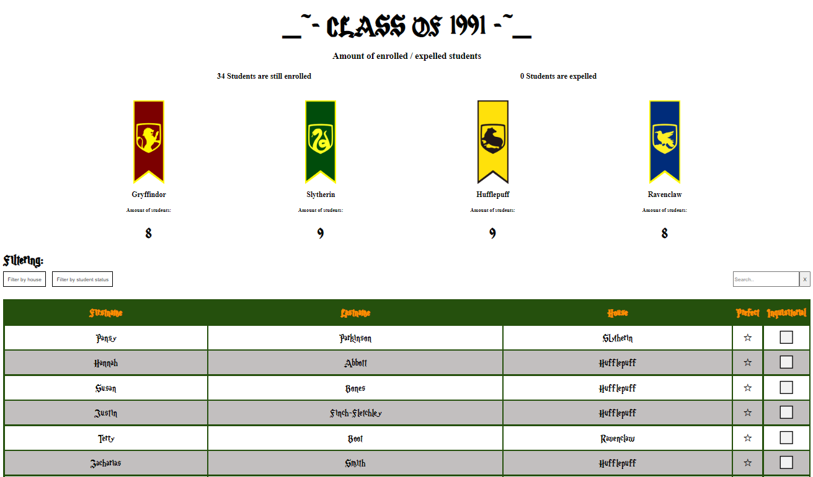

About the Assignment
In this massive assignment, with a lot of customer-requirements, some even conflicting, so I had to make sure to spend a considerable amount of time planning and structuring my solution.
In class, we discussed various planning processes, and why some might be preferable to others.
The backstory (for those who prefer a reason behind the requirements):
I had to pretend to have been hired as the frontender for Hogwarts School of Witchcraft and Wizardry, to build a system to help the administrators handle student lists. As test-data I was given the students from the infamous class of 1991.
First, I was just asked to provide an interface to show the list, sort by firstname, lastname, or house, as well as filter by house. Also the interface must provide a "popup" window with detailed information about each student, including photo and house-crest and colors.
As I finish the assignment, I was asked to expand on the solution - the administrator must be able to expel individual students, and see a list of expelled students. On a less dramatic note, two students from each house can be selected as prefects, and this should show in their "popup".
Then the customer experiences a massive shift in political view, and I was bombarded with additional requirements. In addition to prefects, some students should be able to be appointed to join the inquisitorial squad. I was also tasked with implementing racial profiling, by adding "blood-status" to each student - something the original data doesn't have, so I needed to devise an algorithm for figuring out a students heritage based on lists of family-names.
